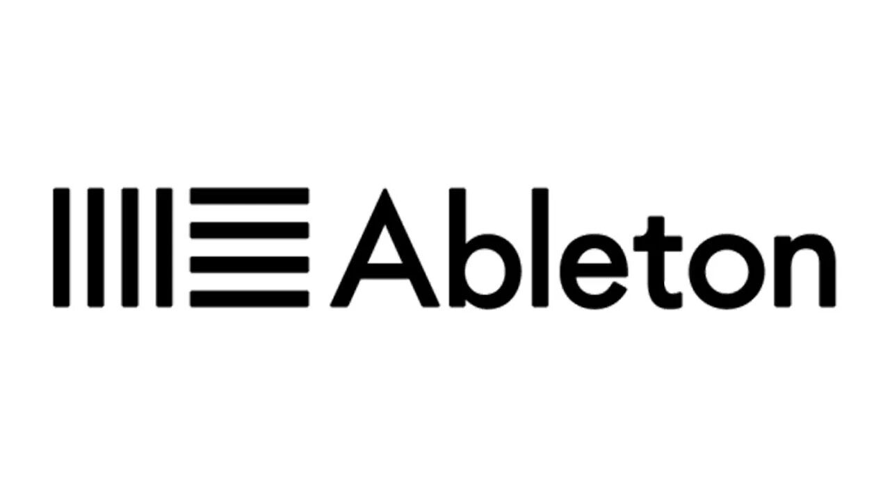
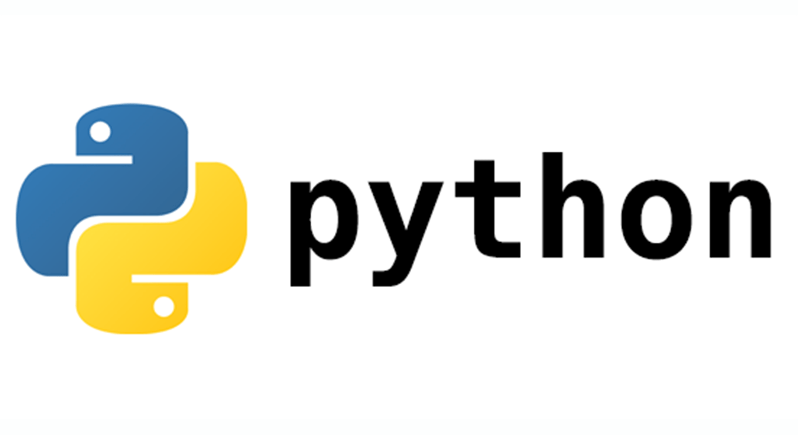

Содержание
Основная информация |
Биография |
Увлечения |
Научная деятельность |
Интересы в области программирования |
Моя любимая игра |
Достижения |
|  | Ableton Live 10 - это программное обеспечение для создания музыки, предназначенное для музыкантов, продюсеров и диджеев. Это цифровая аудиостанция (DAW), которая позволяет пользователям создавать, записывать, редактировать и проигрывать музыку в реальном времени. Ableton Live известен своей гибкостью и удобством использования в живых выступлениях, что делает его популярным среди музыкантов, работающих в различных жанрах, от электронной музыки до рока и хип-хопа. |
|  | Python — высокоуровневый язык программирования общего назначения с динамической строгой типизацией и автоматическим управлением памятью, ориентированный на повышение производительности разработчика, читаемости кода и его качества, а также на обеспечение переносимости написанных на нём программ. Язык является полностью объектно-ориентированным в том плане, что всё является объектами. Необычной особенностью языка является выделение блоков кода отступами. Синтаксис ядра языка минималистичен, за счёт чего на практике редко возникает необходимость обращаться к документации. Сам же язык известен как интерпретируемый и используется в том числе для написания скриптов. Недостатками языка являются зачастую более низкая скорость работы и более высокое потребление памяти написанных на нём программ по сравнению с аналогичным кодом, написанным на компилируемых языках, таких как C или C++. |